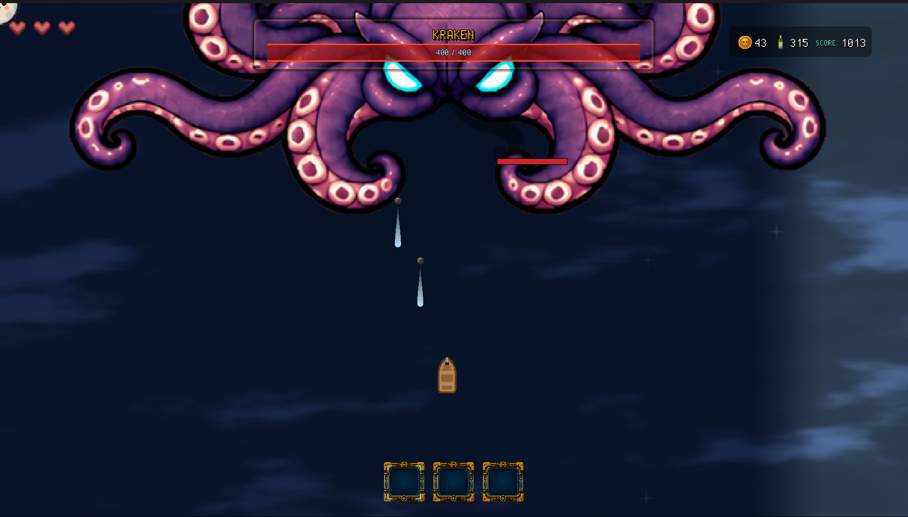

[ SHOWREEL 2026 ]
GAME PROGRAMMER · MELBOURNE
See my portfolio
Iroh
I build gameplay, dialogue and audio systems in C++ and Unreal Engine 5. My strength is creating the working conditions for a team to utilise their talents.
Featured work
Portfolio →
Alchemist TD (2026)
Data-driven dialogue, trigger-fired cutscenes, pooled enemies.
[ Art & Death key art ]
Art & Death (2025)
VR horror pitched to PQube. Spatial audio with per-room reverb.

[ FLAPJACK ]
Flapjack (2026)
Roguelike pirate shooter. A 32-voice audio pool across four buses, plus data-driven dialogue.
Latest notes
Open the Codex →
NOTE-03 · MAY 2026
Object pooling for enemies
Diagnose the pointer, guard it, then remove the crash entirely.
NOTE-02 · MAY 2026
Finding the nearest enemy
An overlap and distance scan for closest-target search.
NOTE-01 · MAY 2026
Learning structs on Thanks Carl
Data-driven waves in a team VR project.
Toolkit
Resume on request →Game enginesUnreal Engine 5 · Godot · Unity
LanguagesC++ · C# · Python · GDScript · Lua
AudioMetaSounds · Quartz · Submixes · voice pooling
Version controlGit · GitHub
WorkflowBlueprints · Jira · Agile